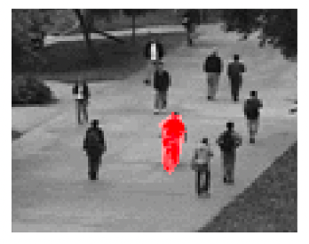
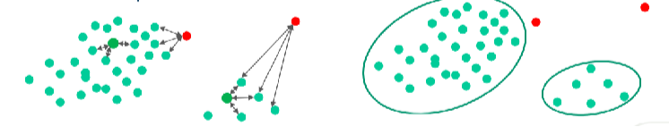
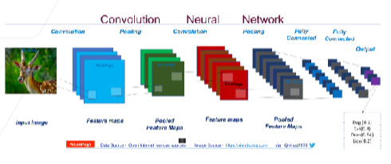
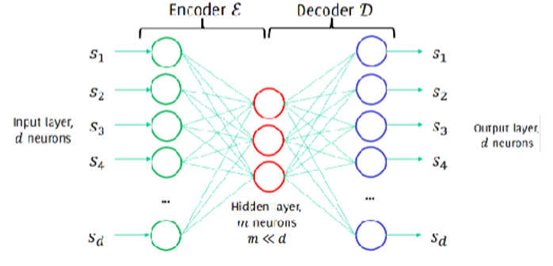

Contributors: Dr. Ahmad Mustafa, Dr. Motaz Alfarraj, Dr. Ashraf Alattar, Dr. Chen Zhou
Teaching Assistants with remarkable contributions include: Kuo-Wei Lai, Wuyang Du, Shiva Mahato, Michael Zhou, Ninghan Zhong
Disclaimer: All content of these notes are part of this course at Georgia Tech. Any re-use or distribution is not permitted without pre-approved permission. All these notes belong to, created by, and copyrighted for Ghassan AlRegib and Mohit Prabhushankar, Georgia Tech, 2021–2028.
The objectives of this lecture are to provide a comprehensive understanding of anomaly detection as a critical machine learning techniques for identifying rare or unusual events within data patterns. This includes defining anomalies in the context of statistical frameworks, introducing the core components of anomaly detection algorithms-statistic and decision rule-and exploring various performance metrics such as True Positive Rate (TPR), False Positive Rate (FPR), and Area Under the Curve (AUC). Additionally, the lecture examines different anomaly detection settings, including semi-supervised, unsupervised, and supervised approaches, emphasizing their unique assumptions, methodologies, and applications. Advanced topics such as density-based methods, reconstruction-based techniques, and hybrid approaches integrating statistical modeling and deep learning are also discussed, equipping learners with the knowledge to address challenges in high-dimensional data and complex anomaly detection scenarios effectively.
1.2 Anomaly Detection
The anomaly detection scheme was first introduced in this lecture. The following things were discussed to demonstrate and elaborate the concept.
Anomaly Definition
Problem Setup
Performance Metrics
Anomaly Detection Settings
Statistical Methods
Reconstruction Methods
GradCON
1.2.1 Definition
Anomaly detection is a machine learning technique aimed at identifying rare or unusual events within normal patterns of data. While anomaly detection is not necessarily an application in itself, it plays a critical role in various domains by flagging significant deviations. Specifically, anomalies are defined as patterns that deviate significantly from a well-established notion of normal behavior. The key challenge lies in accurately defining what determines “normal”. Historically, the approach to anomaly detection has evolved significantly, but for simplicity, we will adhere to basic assumptions in this class.
Example of anomalous structures: Anomalies within a structured material
Another Example of anomalous structures: Anomaly detection scenario in a public setting
In data modeling, normal data are typically generated from a stationary process \(P_N\), where the statistical properties (e.g., mean, variance) remain constant over time. Anomalies, on the other hand, arise from distinct, non-stationary processes \(P_A\), where \(P_A\neq P_N\). This divergence from normality allows anomalies to stand out in datasets.
1.2.2 Example
Examples of anomaly detection include:
Identifying fraudulent transactions within streams of credit card activities
Detecting arrhythmias in ECG tracings that deviate from normal heart activity
Locating defective regions in images that do not conform to a reference pattern
It is important to note that anomalies often manifest as spurious, seemingly irregular elements. Despite their rarity, these anomalous data points are typically the most informative and significant samples within a dataset, as they often highlight critical insights or events of interest.
1.2.3 Anomaly Detection in Images
To address anomaly detection in images, the problem can be formulated mathematically as follows:
Let \(s\) represent an image defined over the pixel domain \(x\in Z^2\)
Let \(c \in x\) denote a specific pixel, and \(s(c)\) he corresponding intensity at pixel \(c\)
The objective is to identify anomalous region in the image \(s\) for each pixel \(c\), which can be expressed through the estimation of an anomaly mask \(\Omega\) defined as:
\[\Omega(c)=\begin{cases}
0, & \text{if $c$ belongs to a normal region}.\\
1, & \text{if $c$ belongs to a normal region}.
\end{cases}\]
If we observe a set of data over time, not necessarily in a stream, represented as:
\({x(t), t=t_0, ...}, x(t) \in R^d\)
where \(x(t)\) are realizations of a random variable with a probability density function \(\phi_0\), anomaly detection involves identifying outliers by analyzing deviations from the normal data distribution \(\phi_0\). In all cases, we’re assuming that there’s a process generating data. Specifically, the process can be modeled as:
\[x(t)=\begin{cases}
\phi_0, & \text{if $x(t)$ belongs to normal data}.\\
\phi_1, & \text{if $x(t)$ belongs to anomalous data}.
\end{cases}\]
Process of detecting anomalies in a time-series signal \(x(t)\)
1.2.4 Anomaly Detection in a statistical framework
Anomaly detection algorithms in a statistical context involves two fundamental components: a statistic and a decision rule. Since data integration process is something explicitly known, it is important to construct measurement.
1.2.4.1 Statistics
A statistic quantifies the data’s behavior and has a predictable response under normal conditions, which means it’s always constant. Examples include:
The average or mean
Sample variance
Log-likelihood values
Classifier confidence scores
An “anomaly score” specifically designed to highlight deviations
1.2.4.2 Decision Rule
The decision rule interprets the statistic to classify data as normal or anomalous. It can be changed or personalized depending on different tasks. Examples include:
Adaptive thresholds: A dynamic boundary is set based on the observed statistic.
Confidence region: Zones within which data is considered normal
Figure showing how anomalies are identified based on statistical deviations
1.2.5 Performance Metrics
When applying anomaly detection, it is crucial to define the specific goals for each scenario. For example, if a dataset is initially designed for multi-class classification, it may need to be adapted for anomaly detection. This involves transforming the dataset from NNN-class classification into a binary classification problem (i.e., normal vs. anomalous). In this new context, the focus shifts to addressing the imbalance between the two classes, as anomalies are typically much rarer than normal data. Effectively handling this class imbalance is essential for achieving accurate and meaningful results in anomaly detection.
1.2.5.1 TPR, FPR
Evaluating the effectiveness of an anomaly detection algorithm requires the use of well-defined performance metrics. Two primary indicators are the True Positive Rate (TPR) and the False Positive Rate (FPR):
\[TPR=\frac{\text{number of anomalies detected}}{\text{number of anomalies}}\]
Also referred to as recall, sensitivity, or hit rate.
Measures the proportion of actual anomalies correctly identified by the algorithm.
\[FPR=\frac{\text{number of normal samples detected}}{\text{number of normal samples}}\]
Represents the fraction of normal samples that were misclassified as anomalies.
Note that we’ve discussed in the previous lectures:
False Negative Rate (FNR) = 1 - TPR
True Negative Rate (TNR) = 1 - FPR
\[\text{(Precision on anomalies)}=\frac{\text{anomalies detected}}{\text{detections}}\]
There is an inherent trade-off between TPR and FPR, which is governed by the choice of the threshold parameter \(\gamma\).
Adjusting \(\gamma\) impacts the detection performance:
Lower \(\gamma\): Increases TPR but may raise FPR, leading to more false positives.
Higher \(\gamma\): Reduces FPR but may lower TPR, resulting in missed anomalies.
Statistical Thresholding in Anomaly Detection
Therefore, to mitigate the trade-off between TPR and FPR, we need to consider at least two indicators (e.g. TPR, FPR) when assessing performance. To name a few example indicators combining both TPR and FPR, \[\text{(Accuracy)}=\frac{\text{(anomalies detected) + (normal samples not detected)}}{\text{(samples)}}\] which indicates the overall correctness of the model. \[\text{(F1 score)}=\frac{2*\text{(anomalies detected)}}{\text{(detections + anomalies)}}\] which balances precision and recall, providing a harmonic mean. In an ideal detector, the model detects all anomalies without false positives, and thus both accuracy and F1 score reach their maximum value of 1.
1.2.5.2 Area Under the Curve (AUC)
Comparing different anomaly detection methods can be challenging, as it requires ensuring that all methods are configured optimally for fair evaluation. To achieve this, performance is typically visualized using the Receiver Operating Characteristic (ROC) curve. The ROC curve plots the True Positive Rate (TPR) against the False Positive Rate (FPR) for various threshold values. The ideal detector is represented by a point at (0,1), where FPR = 0% and TPR = 100%. This corresponds to perfect performance with no false positives and all anomalies correctly identified. We can observe that
A curve closer to the top-left corner (0,1) indicates better performance.
The Area Under the Curve (AUC) serves as a summary statistic to compare models: A higher AUC value indicates superior overall performance. The optimal parameters yield a curve and AUC value as close as possible to the ideal point.
Thus, the ROC curve and AUC provide a robust framework for assessing and comparing the effectiveness of different models or algorithms in anomaly detection.
ROC Curve Comparison Across Methods
1.3 Anomaly Detection Settings
Anomaly detection can be approached in three primary scenarios:
Semi-supervised: Assumes access to mostly normal data with limited or no labeled anomalies. In other words, it is told that all the training data is normal.
Unsupervised: Detects anomalies without any labeled data, relying entirely on inherent data patterns. In other words, training data can be either normal or anomaly, and it is not told.
Supervised: Requires a labeled dataset with examples of both normal and anomalous instances. In other words, it is explicitly told that which data is normal and which data is anomaly.
1.4 Semi-supervised Anomaly Detection
1.4.1 Context and Assumptions
In semi-supervised settings, the training data TR consists primarily of normal samples:
TR = \(\{x(t), x \sim \phi_0\) and \(t < t_0\}\)
This approach is based on the following assumptions:
Normal data are easy to gather and the vast majority.
Anomalous data are difficult and costly to collect and also select, so it would be difficult to gather a representative training set.
Training examples in TR might not be representative of all the possible anomalies that can occur.
For these reasons, semi-supervised anomaly detection is often referred to as novelty detection.
1.4.2 Density-based methods
One common and popular approach for semi-supervised anomaly detection involves monitoring the log-likelihood of data with respect to the normal data distribution \(\phi_0\). The method can be outlined as follows:
Training Phase: Estimate the probability density function (PDF) \(\phi_0\) using the training data TR. \(\phi_0\) can be estimated from the training set using GMMs, which assumes data has normal generation process and takes advantage of mean, standard deviation, and multiple Gaussian distributions.
Testing Phase: Compute the log-likelihood for each data point during testing
\(L(x(t)) = log(\phi_0(x(t)))\)
Monitor the log-likelihood values over time:
\({L(x(t)), t = 1, ...}\)
If anomalies stay near the Gaussian mixture model, it means that the statistics used for the process are not correct.
1.4.3 Advantages and Disadvantages
Advantages: The PDF \(\phi_0\) provides a measure of confidence in the detection, analogous to a p-value. Robust density estimation methods can tolerate a small number of anomalous samples in the training data (TR).
Disadvantages: High-dimensional data poses significant challenges for density estimation, as it becomes computationally expensive and prone to overfitting.
1.5 Unsupervised Anomaly Detection
Unsupervised, data-driven, detection of anomalies is a standard technique in machine learning. Throughout the years, many methods, or algorithms, have been developed to detect anomalies. Most anomaly detection tasks are conducted unsupervised, which means that no labels are available to the user. Consequently, this means that regular optimization, like grid searches for optimal hyperparameters used in supervised learning, are not used within unsupervised anomaly detection. Most unsupervised anomaly detection algorithms produce scores, rather than labels, to samples. The most common convention is that a higher score indicates a higher likelihood that a sample is an anomaly, making unsupervised anomaly detection a ranking problem.
1.5.1 Definition
Unsupervised anomaly detection occurs when there are no labeled anomalies in the training data, and the model needs to identify anomalies without prior knowledge of what constitutes an anomaly. The model’s task is to find data points that deviate significantly from most of the data, making it suitable for cases where anomalies are rare or poorly understood.
1.5.2 Problem Setting
In the context of unsupervised anomaly detection, we assume the training set TR contains both normal and anomalous data but lacks explicit labels. The training set is denoted as:
\(TR = \{x(t), t < t_0\}\), where x(t) represents a data point observed at time t
The underlying assumption is that anomalies are rare relative to normal data. This scarcity forms the basis for differentiating anomalies from most data points. Without prior knowledge of class labels, the problem becomes one of identifying data points that exhibit statistical or structural deviations from the majority.
1.5.3 Methodologies
Several methodologies have been developed for unsupervised anomaly detection, leveraging diverse principles such as proximity, density, and isolation. The most common techniques are discussed below.
1.5.3.1 Distance-Based Methods
Distance-based methods rely on the hypothesis that normal data resides in dense neighborhoods, whereas anomalies are distant from their nearest neighbors.
Distance-based Methods
These methods monitor in the following steps:
Measure the distance between each data point and its \(k\)-nearest neighbors (\(k\)-NN).
Determining if a data point belongs to sparse clusters, exists at the periphery of dense clusters, or is entirely isolated.
The effectiveness of distance-based methods hinges on selecting an appropriate similarity metric (e.g., Euclidean, Manhattan, distance).
Key steps:
For each data point, calculate the distance to \(k\)-NN.
Normalize distances relative to neighbors to identify sparsity.
Points with high normalized distances are flagged as anomalies.
Challenges:
High computational costs for large datasets.
Sensitivity to parameter choices such as k in k-nearest neighbors.
1.5.3.2 Isolation Forest
The term Isolation means ‘separating an instance from the rest of the instances.’ Since anomalies are ‘few and different’ and therefore they are more susceptible to isolation. The Isolation Forest algorithm is grounded in the notion that anomalies are easier to isolate from most normal data points. It employs a forest of binary trees constructed iteratively by:
Selecting a feature \(x_i\)and a random split value within its range.
Splitting data recursively, isolating anomalies in fewer steps due to their sparsity.
The path length to isolate a data point is inversely proportional to its normalcy.
Isolation Forest: Step-by-step
Isolation Forest is computationally efficient and scalable, making it suitable for high-dimensional datasets.
1.5.4 Enhancements and Integration
While unsupervised methods excel in label-free scenarios, their efficacy can be improved through semi-supervised learning when partial labels are available. For instance:
Integration with DBSCAN to identify clusters and outliers.
Combining Isolation Forest with neural network-based autoencoders for feature extraction.
Dynamically adjusting thresholds for anomaly scores based on data characteristics.
1.5.5 Applications
Unsupervised anomaly detection methods have broad applicability across domains:
Cybersecurity: Detecting unusual access patterns or malware activity.
Industrial Monitoring: Identifying equipment faults or inefficiencies.
- Finance: Uncovering fraudulent transactions in banking and e-commerce.
Adapting to evolving data distributions in dynamic environments
Explaining why certain data points are deemed anomalous
1.6 Statistical Methods
Image-based anomaly detection identifies regions or patches in an image that deviate from normal patterns. Unlike global anomaly detection, which considers an entire image as a single entity, patch-based techniques and pixel-level analysis offer higher granularity and better sensitivity for anomalies localized to specific regions.
1.6.1 Patch-based Image Analysis
Patch-based image analysis divides an image into smaller, non-overlapping or overlapping regions (patches), enabling localized feature extraction. The methodology relies on isolating normal patterns during training and comparing these to unseen patches during inference.
1.6.1.1 Training Process
Normal images divided into patches s, typically of fixed dimensions (e.g., 4x4 or 8x8 pixels).
Each patch is modeled as a multivariate Gaussian distribution: \(\phi_0 = N(\mu, \sum)\), where \(\mu\) and \(\sum\) represents the mean vector and covariance matrix of normal patches, respectively.
The statistical model captures the likelihood of a patch belonging to the normal distribution.
1.6.1.2 Testing Process
Test images are similarly divided into patches.
The likelihood \(\phi_0(s)\) of each patch is evaluated based on the trained model.
Patches with likelihood values below a predefined threshold are flagged as anomalous.
1.6.1.3 Challenges
Larger patch size increases the dimensionality of the feature space, making Gaussian modeling less effective. Adjacent patches often exhibit dependencies that Gaussian models fail to capture. This method assumes independence between pixel intensities in a patch, which may not always hold in real-world scenarios. As patch size increases, modeling becomes increasingly challenging due to high-dimensional data correlations.
1.6.2 Adjacent Pixel-value Distribution
Adjacent pixel-value distribution focuses on the spatial correlations between neighboring pixels, providing insights into texture and structural patterns within an image.
1.6.2.1 Correlation in Spatial Data
- Image pixels are inherently correlated due to continuous and smooth transitions in natural images.
- Modeling such dependencies using simple probabilistic functions (e.g., Gaussians) is challenging.
1.6.2.2 Key Insights
Histograms and Scatter Plots: Visual analysis of pixel intensities reveals spatial dependencies and correlations.
Limitations of Gaussian Models: Gaussian models fail to capture the complexity of high-dimensional and highly correlated data, especially in larger patches.
1.6.2.3 Implications for Anomaly Detection
Correlations among pixel values can obscure anomalies, necessitating advanced techniques that account for spatial structure (e.g., convolutional filters in neural networks).
Scatter plots of adjacent pixel values reveal intrinsic patterns of normal images, allowing anomalies to be identified as deviations from these distributions. Incorporating local pixel interactions enhances the robustness of anomaly detection.
1.6.3 Maximum Softmax Probability (MSP)
Maximum Softmax Probability is a neural network-based approach to detect anomalies by analyzing the output probability distribution of a classification model.
Convolution Neural Network
1.6.3.1 Concept
Neural networks produce softmax scores for classification tasks, where each score represents the likelihood of an input belonging to a specific class.
MSP leverages these scores to identify out-of-distribution (OOD) samples
1.6.3.2 Methodology
Softmax Thresholding: A threshold is defined for softmax scores. If the maximum softmax probability for an input falls below this threshold, the input is classified as anomalous.
In-distribution vs. Out-of-distribution: In-distribution samples yield high softmax probabilities for one class, whereas OOD samples produce lower scores.
1.6.3.3 Advantage
MSP provides a simple yet effective method for anomaly detection in neural networks.
It allows for anomaly detection without modifying the training process, making it computationally efficient.
1.6.3.4 Challenges
High dependence on the softmax calibration of the model.
Sensitivity to the choice of threshold, which may vary across datasets.
1.6.4 Manifolds in Natural Images
Natural images exhibit low-dimensional manifold structures embedded in high-dimensional spaces. This insight is pivotal in understanding how anomalies deviate from normal data.
Theoretical Basis Image patches lie close to a low-dimensional manifold. Anomalies are outliers that reside far from this manifold.
Implementation vis Neural Networks Convolutional Neural Networks (CNNs) extract feature representations that are clustered closer on the manifold for normal patches. Latent representations in the manifold reveal the underlying structure of normal data, facilitating anomaly detection.
This approach significantly improves the interpretability and precision of anomaly detection in complex datasets.
1.7 Extended Mythologies
To address the limitation of each method, hybrid approaches can be developed by integrating statistical modeling, manifold learning, and deep learning:
1.7.1 Reconstruction-Based Methods
Definition: Reconstruction-based methods fit a statistical model to the observation to describe dependence and apply anomaly detection on the independent residuals. The rationale is that \(\mu\) can reconstruct only normal data, and thus anomalies are expected to yield large reconstruction errors.
Process: Detection is performed by using a model \(\mu\), which can encode and reconstruct normal data as follows:
During training: Learn the model \(\mu\) from training set TR.
During testing:
Encode and reconstruct each test signal s through \(\mu\)
Assess err(s), namely the residual between s and its reconstruction through \(\mu\)
Example: Autoencoders
Structure of Autocoder
Neural networks used for data reconstruction since they learn the identity function.
Autoencoders are trained to reconstruct all the samples in the training set. The reconstruction loss over the training set TR is \[L(TR)=\Sigma_{s\in{TR}}\Big|\big|s-D(E(S))\big|\Big|_2\]
Training of D(E(•)) is performed through standard backpropagation methods, e.g. SGD.
1.7.2 Gradient Constraints
Introduce gradient-based regularizations during training to enhance anomaly separation
Use GradCON (Gradient Constrained Optimization) to penalize anomalies during model updates
1.7.3 Ensemble Techniques
Combine MSP with Patch-based and manifold approaches for robust multi-scale anomaly detection
1.8 Q&A Section
What is the primary challenge in defining anomalies within a dataset? Answer: The primary challenge is accurately defining “normal" behavior within the data. Since anomalies are identified based on deviations from normal patterns, an unclear or incorrect definition of normality can lead to either false positives (normal data misclassified as anomalies) or false negatives (anomalies classified as normal). Explanation: The process of anomaly detection relies heavily on understanding the statistical properties of normal data. In many cases, normal behavior can vary significantly across contexts, requiring careful consideration of the domain, data patterns, and use case. This challenge underscores the importance of robust statistical modeling or machine learning techniques.
Why are anomalies often considered the most significant data points in a dataset? Answer: Anomalies typically highlight rare and unusual events that may signal critical insights or important occurrences, such as fraudulent transactions, system failures, or medical conditions. Explanation: While anomalies represent only a small fraction of the data, they are often highly informative because they stand out from the background of normal behavior. This makes them valuable in applications where detecting rare events can have substantial impacts, such as cybersecurity or medical diagnostics.
What are the two main components of an anomaly detection algorithm in a statistical framework? Answer: The two main components are (1)Statistic: A measurement that quantifies the behavior of the data and responds predictably under normal conditions, and (2) Decision Rule: A mechanism to interpret the statistic and classify data points as normal or anomalous. Explanation: The statistic provides a mathematical or computational representation of the data’s characteristics, while the decision rule applies thresholds or confidence intervals to make a binary decision (normal vs. anomalous). Together, these components form the foundation for statistical anomaly detection.
What is the trade-off between the True Positive Rate (TPR) and False Positive Rate (FPR) in anomaly detection? Answer: There is an inherent trade-off where lowering the threshold parameter (\(\gamma\)) increases TPR (detecting more anomalies) but also raises FPR (increasing false positives). Conversely, raising \(\gamma\) reduces FPR but may lower TPR, leading to missed anomalies. Explanation: The threshold \(\gamma\) determines the sensitivity of the anomaly detection algorithm. Adjusting \(\gamma\) too low makes the model more inclusive, detecting more anomalies but potentially misclassifying normal points as anomalies. A higher threshold does the opposite, making the model more conservative.
What is the main challenge of density-based methods in anomaly detection? Answer: The main challenge is handling high-dimensional data, as estimating probability density functions (PDFs) in high dimensions is computationally expensive and prone to overfitting. Explanation: Density-based methods rely on accurate modeling of the normal data distribution, but as dimensionality increases, data sparsity and computational complexity make it difficult to achieve robust estimations. This is often referred to as the "curse of dimensionality."
What are the primary advantages of using the optimization techniques discussed in the lecture for reducing computational overhead in neural networks? Answer: The optimization techniques such as quantization, pruning, and knowledge distillation help in: Reducing model size - These techniques decreases the memory footprint, making models feasible for edge devices. Improving inference speed - By simplifying computations, these methods ensure faster inference without significant loss of accuracy. Energy efficiency - Optimization reduces power consumption, which is critical for deploying models on mobile or IoT devices. Explanation: Quantization reduces the precision of the weights and activations, thereby lowering the computational requirements. Pruning removes redundant parameters, maintaining the key structure of the model while improving efficiency. Knowledge distillation transfers knowledge from a larger “teacher" model to a smaller “student" model, maintaining performance while reducing complexity.
Explain the role of gradient clipping in addressing exploding gradients during backpropagation through time (BPTT) in RNNs. Answer: Gradient clipping restricts the magnitude of gradients to a predefined threshold during the backpropagation process. If a gradient’s norm exceeds this threshold, it is scaled down proportionally to fit within the limit. Explanation: In RNNs, gradients can grow exponentially during BPTT, leading to numerical instability and poor convergence (exploding gradients). Gradient clipping ensures stable training by preventing gradients from becoming excessively large. It acts as a safeguard, especially in deep networks where long-term dependencies are critical but prone to instability.
What is the significance of attention mechanisms in transformers compared to traditional RNN-based sequence models? Answer: Attention mechanisms allow models to focus on relevant parts of the input sequence dynamically, rather than relying solely on sequential processing like RNNs. This improves parallelism and efficiency. Explanation: RNNs process sequences step-by-step, making them computationally expensive for long inputs. Attention mechanisms, a core component of transformers, compute relationships between all parts of the sequence simultaneously. This approach enhances the ability to capture long-term dependencies, enabling state-of-the-art performance in tasks like machine translation and text summarization.
How does the choice of activation function affect the training dynamics and expressiveness of a neural network? Answer: The activation function determines the network’s ability to capture non-linear relationships and influences gradient propagation during backpropagation. Explanation: ReLU (Rectified Linear Unit) is commonly used due to its simplicity and efficiency, avoiding vanishing gradient issues seen in sigmoid and tanh. However, ReLU can suffer from "dead neurons." Alternatives like Leaky ReLU and GELU address these issues by allowing small gradients for negative inputs, improving learning dynamics and overall expressiveness.
What are the trade-offs involved in using batch normalization for stabilizing training in deep networks? Answer: Batch normalization accelerates training by normalizing intermediate layer outputs, reducing internal covariate shift. However, it introduces computational overhead and can cause issues during inference when batch statistics differ from training statistics. Explanation: During training, batch normalization reduces sensitivity to weight initialization and learning rates. However, it relies on batch statistics, which can vary significantly for small batch sizes or during inference, potentially affecting performance. Despite these challenges, its ability to stabilize training often outweighs the drawbacks.